<!-- page-main -->
<section id="page-main" class="padding-small">
  <div class="container">
    <p class="text-primary"><small>AI for Science - 科学技術機械学習</small></p>
    <h2>物理現象の保存量を発見するニューラル微分方程式</h2>
    <p>データから物理現象をモデル化し，シミュレーションや制御を高性能化する機械学習手法が古くから検討されてきた．特にニューラル常微分方程式 (NODE) は，ニューラルネットワークと数値積分を組み合わせることで，連続時間のダイナミクスの精緻なモデル化に成功した. また，実世界のシステムには，時間の経過とともに変化しない量である「保存量」が存在する ．既知の保存量に関する事前知識を取り入れることで，対象システムを正確に学習することが試みられてきた．例えばハミルトニアンニューラルネットワーク (HNN) は，ハミルトン方程式を近似することで，システムのエネルギーを保存する．この他にも，運動量やホロノミック拘束を取り入れる手法もある．</p>
    <p>しかし，ニューラルネットワークが未知の対象システムを学習する状況では，対象システムの保存量も未知であることが予想される．そこで，データから保存量を発見できる方法として，第一積分保存ニューラル微分方程式 (FINDE) を提案する． FIND は，データから様々な種類の保存量を統一的な枠組みで発見し，与えられたシステムの未来の状態をより長く正確に予測できる．</p>
    <ul>
      <li>Takashi Matsubara and Takaharu Yaguchi, &ldquo;FINDE: Neural Differential Equations for Finding and Preserving Invariant Quantities,&rdquo; <em>Proc. of The Eleventh International Conference on Learning Representations (ICLR2023)</em>, May 2023. (<a href="https://openreview.net/forum?id=tLScKVhcCR">openreview</a>) (<a href="https://arxiv.org/abs/2210.00272">arXiv</a>)</li>
    </ul>
    <div class="row">
      <div class="col-md-10 offset-md-1">
        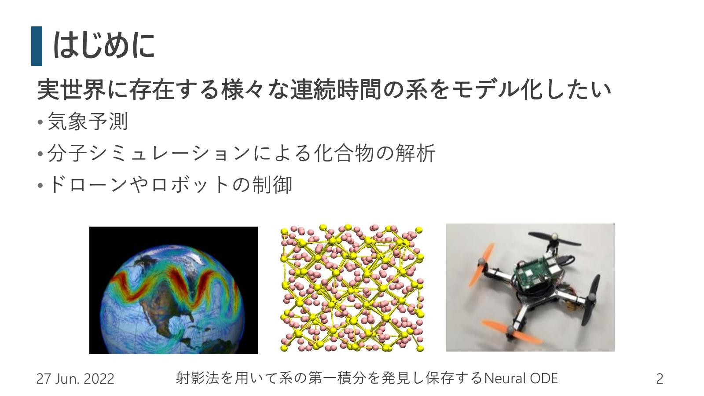
        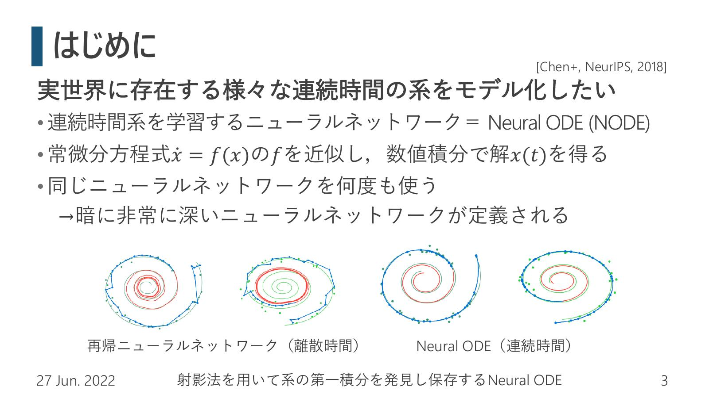
        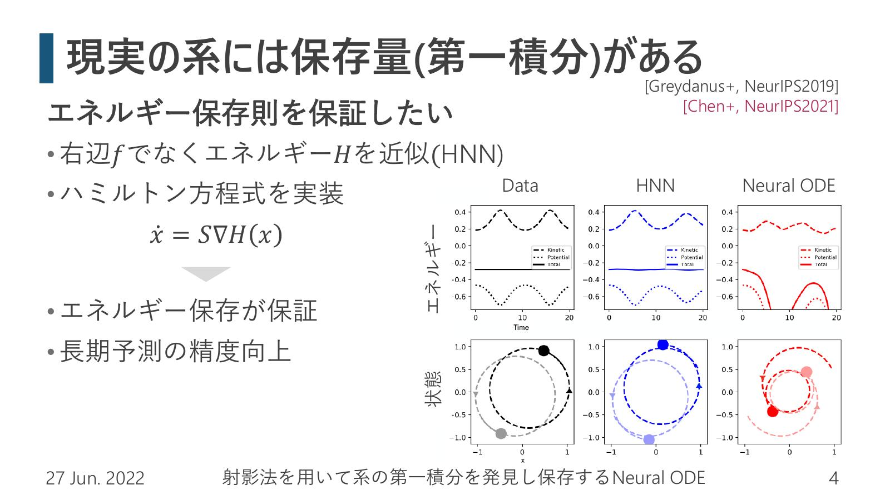
        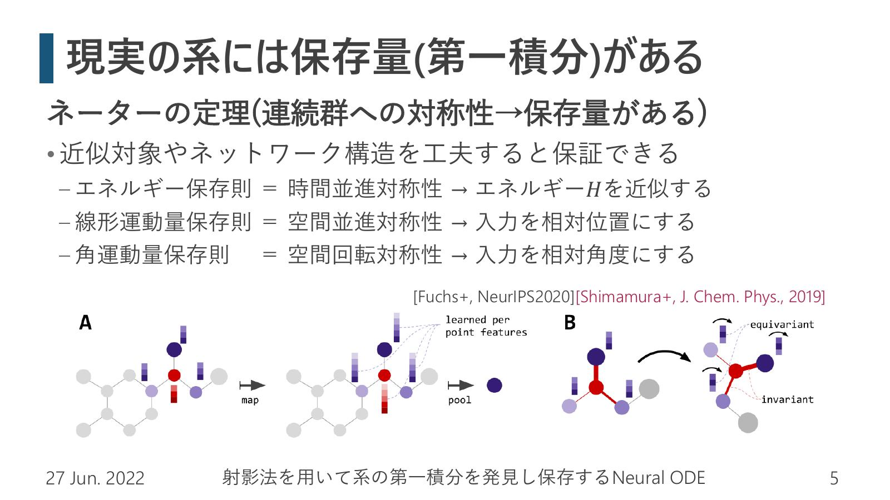
        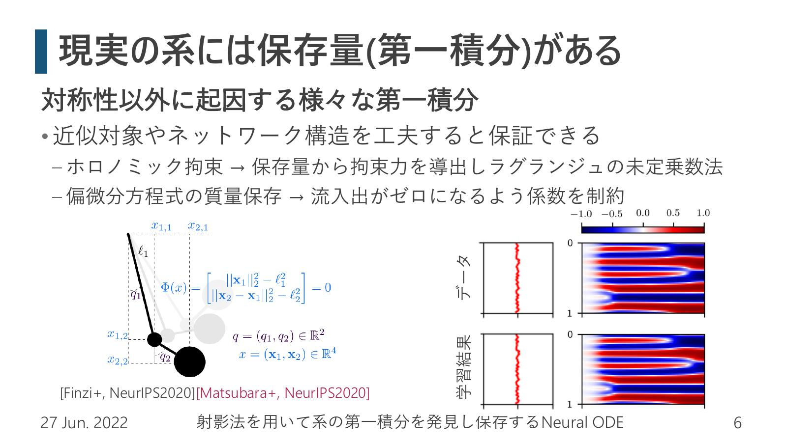
        
        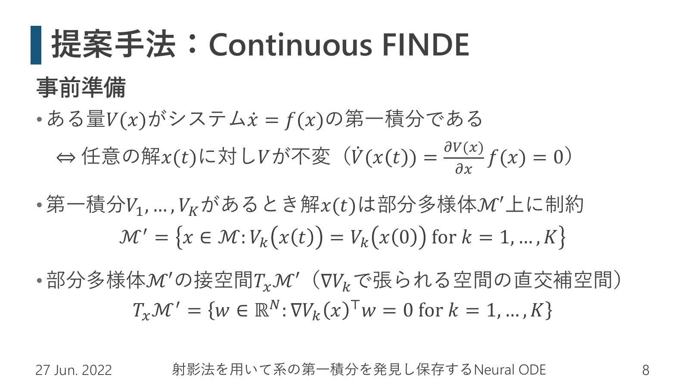
        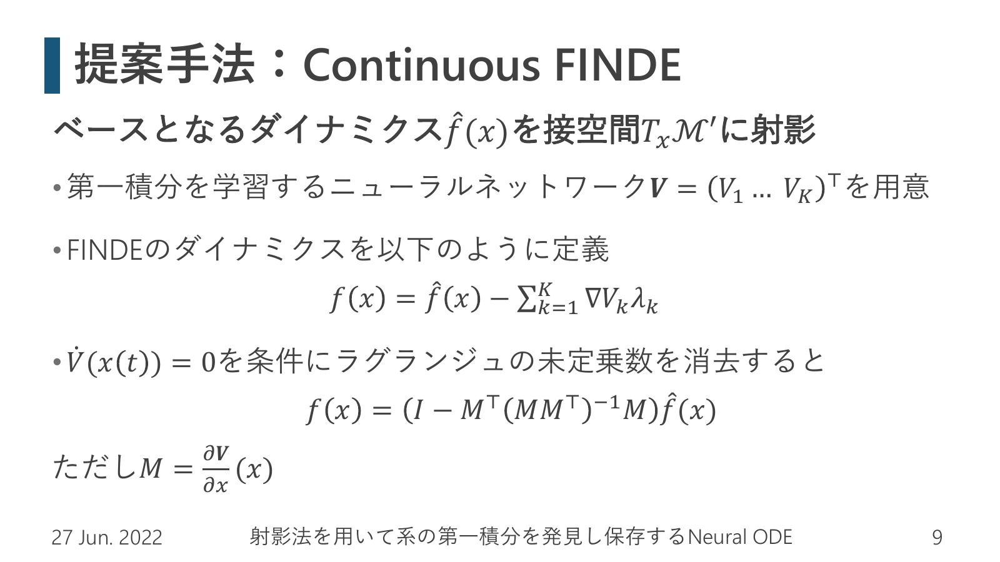
        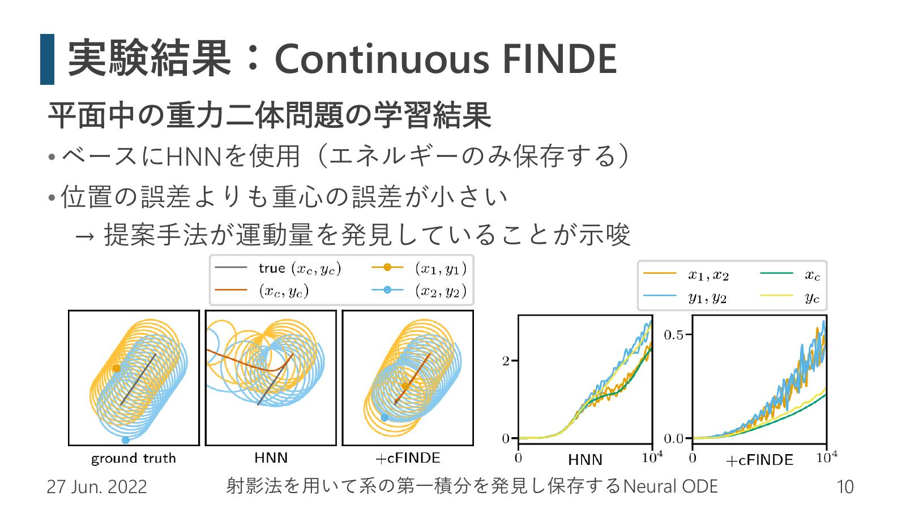
        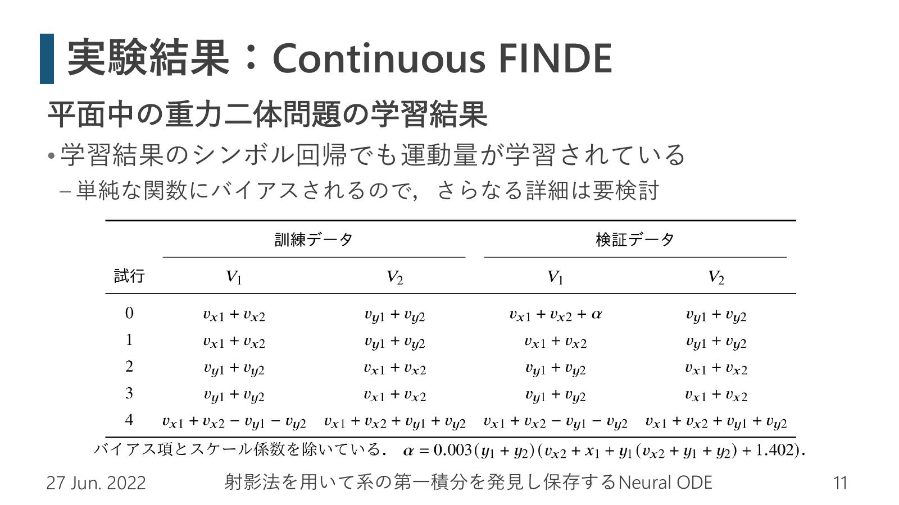
        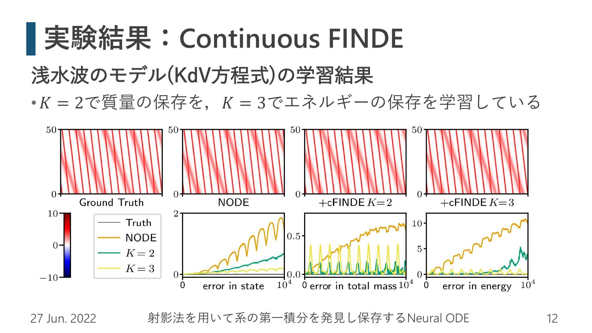
        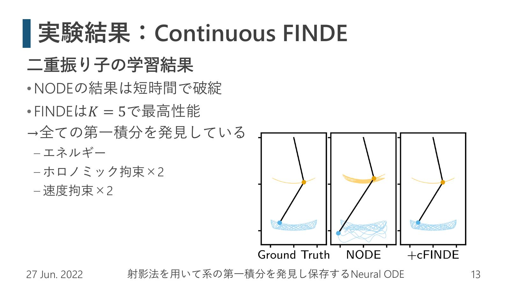
        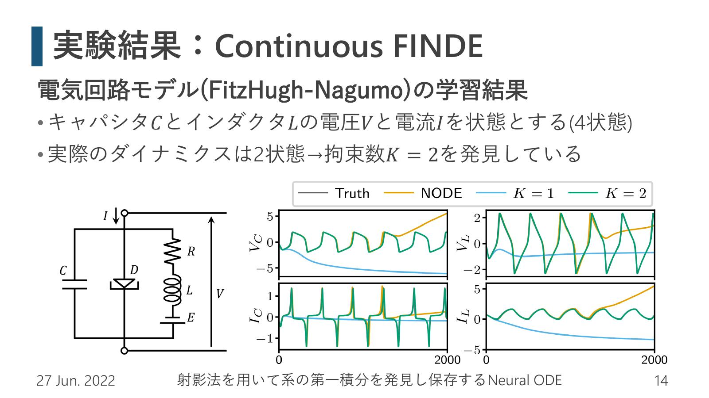
        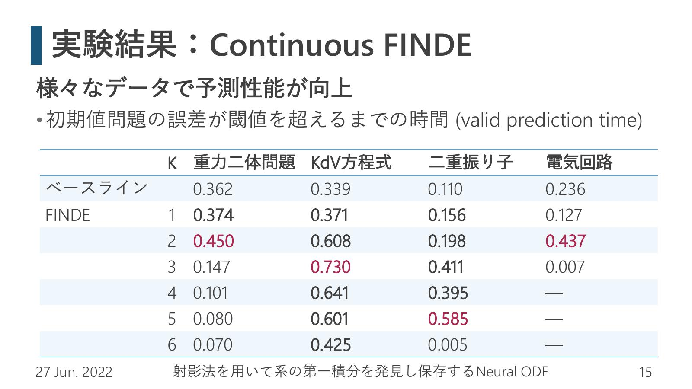
        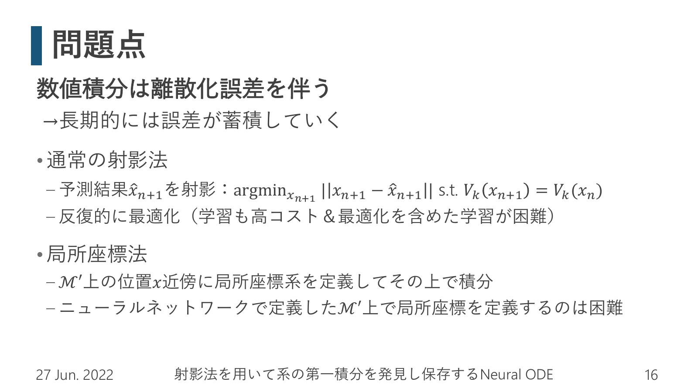
        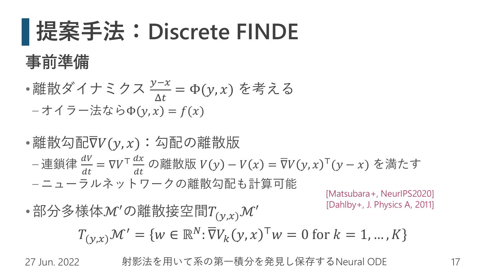
        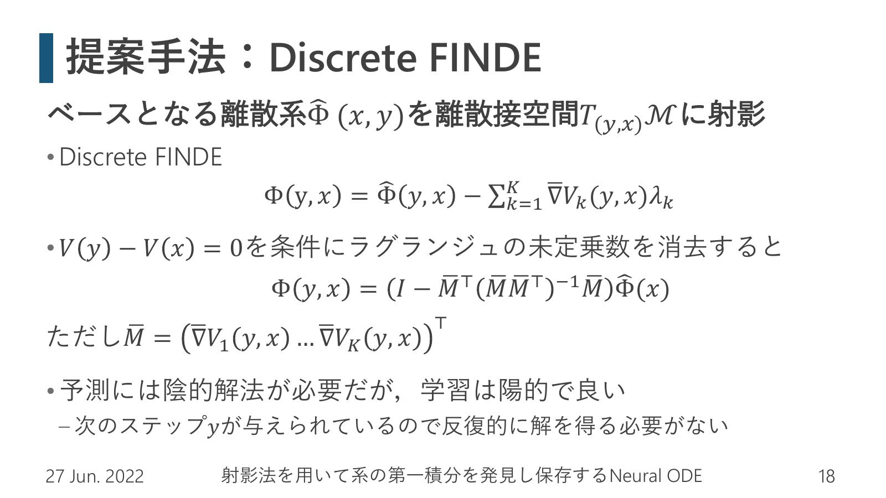
        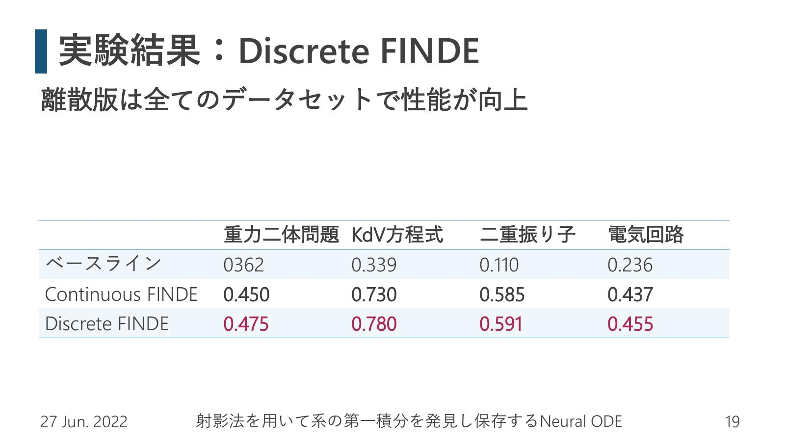
        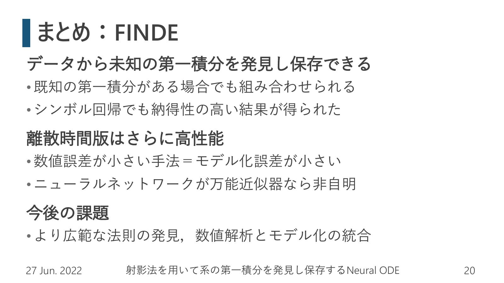
      </div>
    </div>
  </div>
</section>
